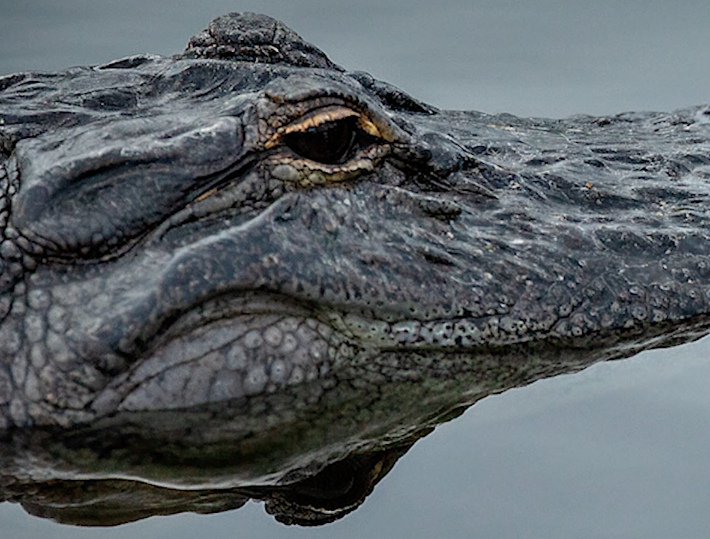
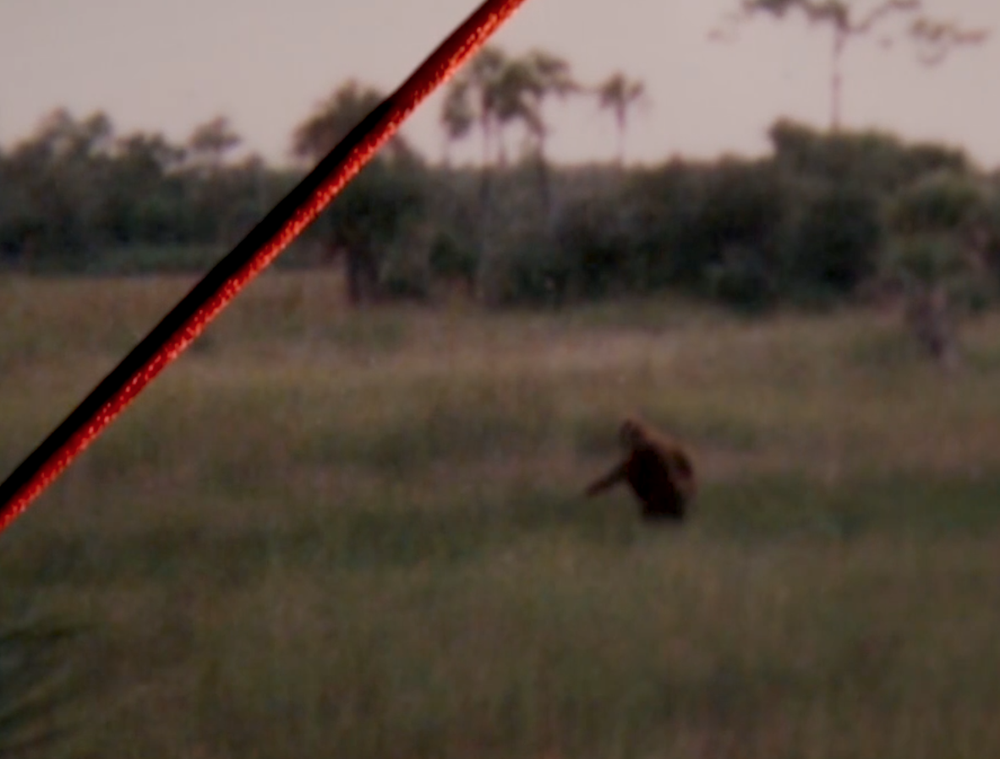
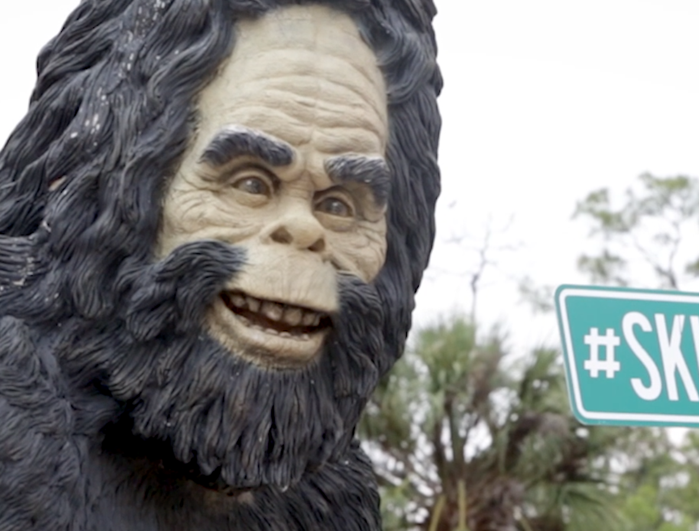
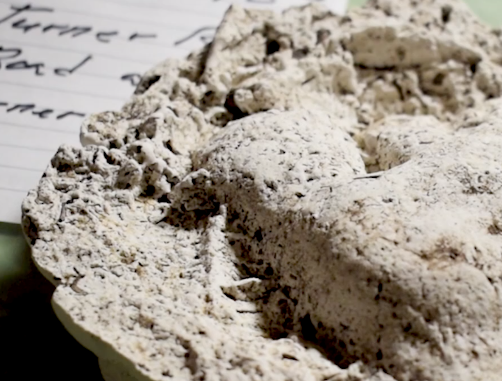
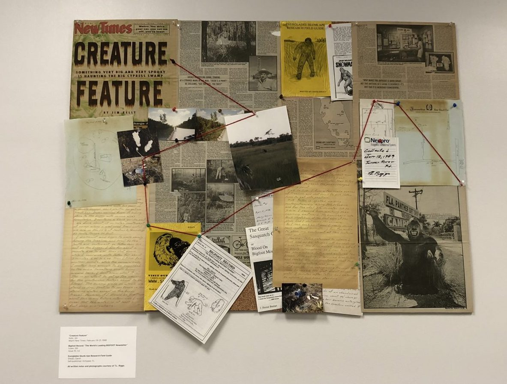
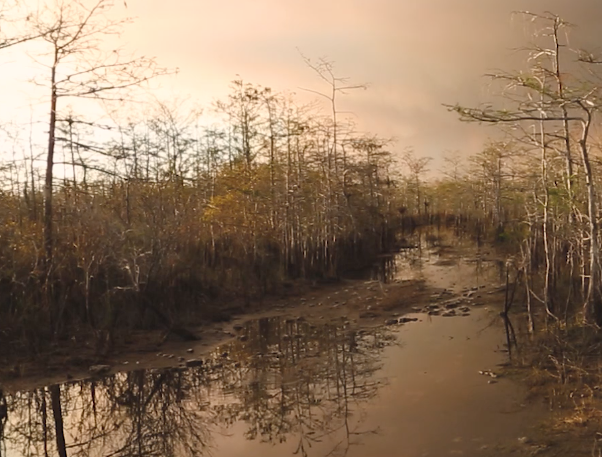

Lazy Gator
An alligator floats in the water on a hot day, peering out over the water.
In The Wild
The clearest known photograph of the Skunk Ape in the wild, taken by Dave Shealy.
Creature Feature
A life-size recreation of the Skunk Ape guards the enterance to the Skunk Ape Regional Headquarters.
Track Record
A cast of a Skunk Ape footprint, discovered and preserved by T.L. Riggs.




Evidence v. Proof
A collection of evidence regarding the existence of a Skunk Ape in the Big Cypress National Preserve.
Swamped
The Florida Everglades are filled with swamps that are home to the Skunk Ape.